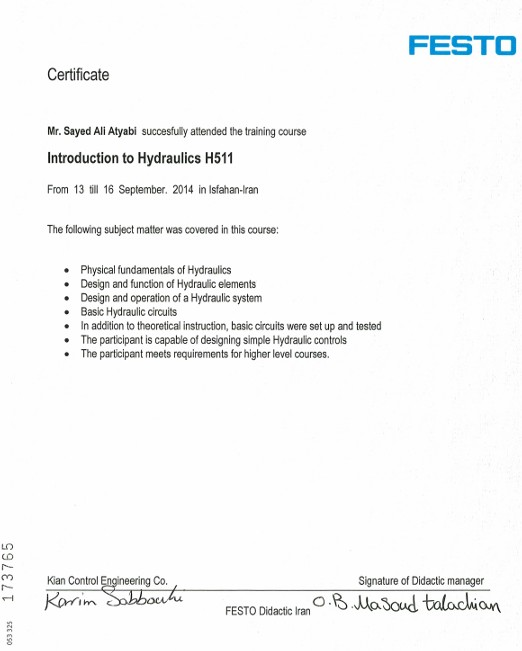
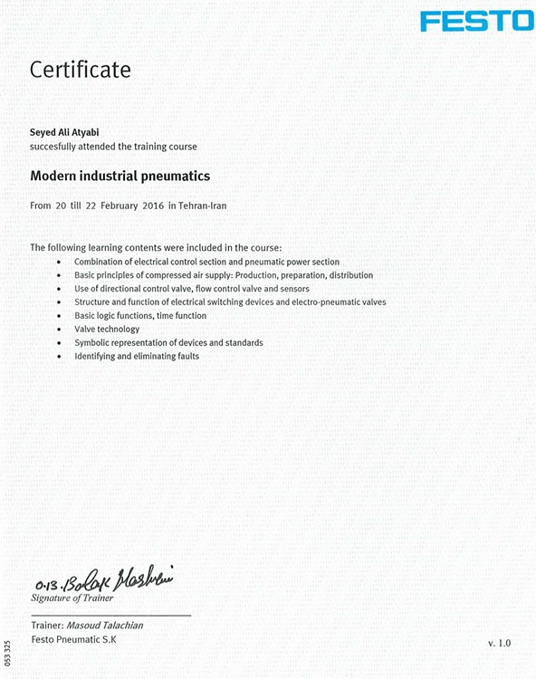
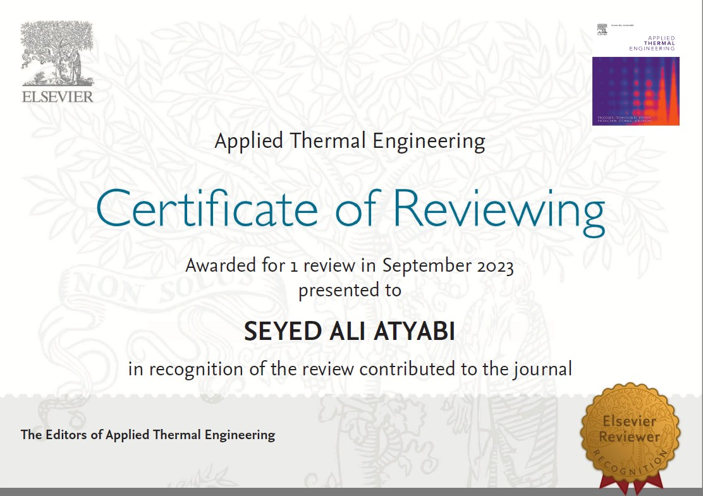

Research Projects

ML-Accelerated Osmotic Pump Drug Delivery Optimization
Duration: 2024 – Present | Institution: KU Leuven, Belgium
• Challenge: Systematic underprediction of drug and osmotic agent release rates in a dual-compartment co-delivery device, driven by a time-varying solid–liquid interface and nonlinear solubility dependencies not captured by CFD models.
• Method: Built a 2D multiphysics COMSOL model coupling Navier–Stokes, convection–diffusion mass transport, and Population Balance dissolution ODEs. Automated parametric sweeps via a Python–COMSOL API pipeline with RMSE-guided Bayesian optimization, then trained Random Forest surrogate models on the CFD-generated dataset.
• Achievement: Identified and formulated a dynamic convective flux mechanism, closed the osmotic agent mass balance, and replaced computationally expensive finite-element parametric runs with fast ML surrogates — drastically reducing design-space search time.
Tools: COMSOL, Python, ML
Key Results: New S–L interface mechanism identified; RMSE-guided surrogate pipeline targeting <0.5 mg/day prediction error
CFD Modeling of ED, osmotic pump, ...
Duration: 2024 – Present | Institution: KU Leuven, Belgium
• Challenge: Optimizing mass transport and selectivity performance parameters during extraction of lithium ions from black mass leachates using ED system.
• Method: Developed and cross-validated comprehensive CFD transport frameworks focusing closely on Selective Monovalent Cation Exchange Membranes (SCEM).
• Achievement: Contributed functional system metrics assisting internal CAD module designs and targeted parameters for custom manufacturing loops.
Tools: COMSOL, Python
HERAQCLES
Duration: 2021 – 2024 | Institution: VITO, Mol, Belgium
• Challenge: Overcoming fluidic mass transport dead-zones and high overpotentials present in standard rectangular electrolysis cell form factors.
• Method: Designed and simulated a distinct round-cell geometry utilizing multiphase fluid transport mechanics combined with automated Balance of Plant (BOP) analytical code.
• Achievement: Successfully verified mass tracking configurations that yielded up to a 30% reduction in net electrochemical energy expenditure.
Tools: COMSOL, Python
H2-MHYTIC
Duration: 2021 – 2024 | Institution: VITO, Mol, Belgium
• Challenge: Bypassing the prohibitive economic investment required for noble-metal catalysts within standard green hydrogen stacks.
• Method: Evaluated the multi-physics behavior of a high-performance hydroxyl exchange membrane (HEM) system utilizing porous Nanomesh configurations.
• Achievement: Validated a robust, noble-metal-free ceramic membrane system execution that successfully preserves strong operational yields.
Tools: COMSOL, Python
BioRECO2VER
Duration: 2021 – 2024 | Institution: VITO, Mol, Belgium
• Challenge: Ensuring optimal fluid percolation distributions in gas diffusion layers under intense mechanical compression stack forces.
• Method: Constructed non-linear stress-coupled electrochemical transport models mapping structural boundaries for a 300 cm2 setup.
• Achievement: Precisely tracked critical percolation threshold metrics, protecting large-scale CO2 electrolyzer units from physical mass flow chokes.
Tools: COMSOL Multiphysics, ANSYS
Membrane Selection
Duration: 2021 – 2024 | Institution: VITO & John Cockerill, Belgium
• Challenge: Isolating high-durability, efficient selective layers capable of supporting concurrent electrochemical synthesis during lime production lines.
• Method: Deployed continuum fluidic transport simulations inside COMSOL to map local chemical boundaries and ionic degradation rates.
• Achievement: Formulated structured criteria guiding membrane screening steps for low-carbon industrial production generating calcium hydroxide.
Tools: COMSOL Multiphysics, Process Modeling
Patented Coke Injection & Removal System in Cracking Furnaces
Duration: 2020 – 2021 | Institution: Persian Gulf University
• Challenge: Mitigating heavy coke deposits formed during ethylene-ethane pyrolysis that spike fuel consumption, drop throughput, and force regular, costly shutdowns every 45–60 days.
• Method: Developed high-fidelity CFD simulations coupling complex aerothermal fields (combustion, conduction, convection, radiation) with transient thermal stresses to optimize insulated, heat-resistant bottom-injection manifolds.
• Achievement: Officially patented and successfully deployed an in-situ combustion technology at a live petrochemical plant, routing coke effluents directly into combustion chambers to eliminate decoke drum operations and reduce greenhouse gas emissions.
Tools: ANSYS Fluent
Centrifugal Pump Capacity Enhancement via CFD
Duration: 2020 – 2021 | Institution: Persian Gulf University
• Challenge: Secondary flow losses in industrial process pumps restrict flow capacity and compromise plant operating efficiency.
• Method: Implemented high-fidelity 3D CFD models (ANSYS-CFX) to evaluate operational parameters and optimize internal impeller blade geometry.
• Achievement: Validated redesigns delivered a 10.6% to 59.6% capacity increase across four process pumps while maintaining required head delivery.
Tools: ANSYS-CFX
Oxygen Mixing Nozzle CFD Optimization
Duration: 2020 – 2021 | Institution: Persian Gulf University
• Challenge: Achieving high oxygen concentration uniformity during throughput expansion scaling loops in industrial Monoethylene Glycol (MEG) arrays.
• Method: Conducted a rigorous high-velocity multi-component mixing CFD evaluation optimizing internal geometric injector nozzle properties.
• Achievement: Validated a re-engineered internal profile layout that yields elevated mixing qualities across targeted flow streams.
Tools: ANSYS Fluent
Li-Ion Battery Thermal Management System Design
Duration: 2020 | Institution: University of Isfahan
• Challenge: Preventing localized hotspot build-up and extreme thermal degradation in high-capacity LiFePO4 battery packs during elevated discharge rates.
• Method: Conducted high-fidelity advanced CFD simulations coupled with electrochemical-thermal transient multi-field modeling approaches.
• Achievement: Engineered a novel coolant flow field that limited overall thermal gradients to within 5K while preserving an optimal 25-40°C threshold at 4C discharge states.
Tools: ANSYS Fluent

Vanadium Flow Battery – Ion-Selective Membrane Modeling
Duration: 2024 – Present | Institution: KU Leuven, Belgium
• Challenge: Mitigating species crossover and tracking complex electrokinetic fluxes that degrade capacity over time in large-scale energy storage flow cells.
• Method: Built advanced multi-physics transport models strictly resolving the coupled Poisson-Nernst-Planck (PNP) equations inside ion-selective layers.
• Achievement: Accurately simulated dynamic charge distributions and ionic flux pathways, giving explicit criteria to optimize membrane selectivities.
Tools: COMSOL Multiphysics, Python
Key Results: PNP equations, membrane ion selectivity, scale-up
Publications


Book Chapters

Conference Presentations


.gif)

Education
Ph.D. in Mechanical Engineering (Energy Conversion)
Dissertation: Numerical and Thermodynamic Modeling and Multi-Objective Optimization of a PEM Fuel Cell car Power Generation System Using Genetic Algorithms.
Tools: ANSYS Fluent, MATLAB, Genetic Algorithms toolbox, EES
Achievement: Published 8 journal papers
M.Sc. in Mechanical Engineering (Energy Conversion)
Thesis: Computational Fluid Dynamics Modeling and Design Optimization of a Honeycomb Flow Field for a PEM Fuel Cell Stack
Tools: ANSYS Fluent, MATLAB
Achievement: Novel flow field design
B.Sc. in Mechanical Engineering (Solid Mechanics)
Foundation: Strong fundamentals in solid mechanics, thermodynamics, and engineering
Certificates



{kind=link}
